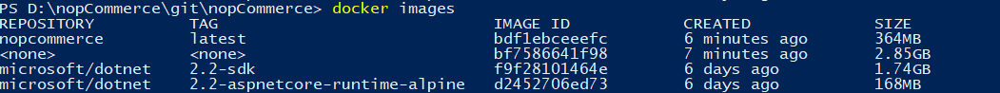
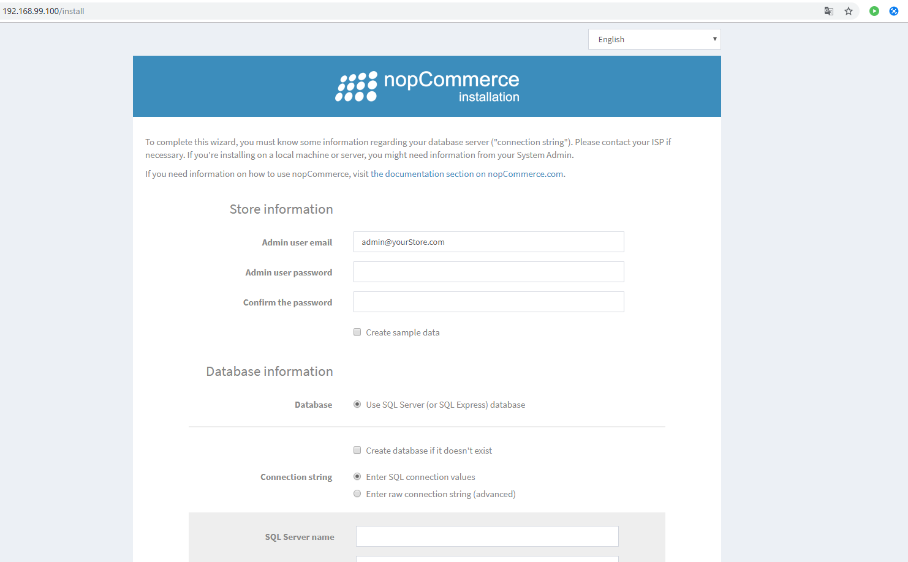

Docker
This document describes a step-by-step guide to building and running a Docker container.
Preparing for the deployment of virtual Docker in Windows environment.
First, we need to install Docker on our PC. We will use Docker Desktop for Windows, it's help as to build and share containerized applications and microservices. The Docker Desktop also available for Linux and Mac.
After installing and running the application, you will have access to all the possibilities of containerization. Further, we will do all the work in PowerShell, since the command mode will be the same in any environment.
We collect the Docker container. For the convenience of executing commands, go to the directory where Dockerfile is located (the root directory of the nopCommerce source files).
The command that we need:
[docker build -t nopcommerce .]This command builds the container according to the instructions described in the "Dockerfile" file. The first launch of the assembly will take a lot of time since it will require downloading two basic images for .Net Core applications.
The first image containing the SDK is required for the intermediate container, which will assemble the application by repairing all the dependencies, and then execute the process of publishing the
Nop.Webapplication to a separate directory, from which you will create the resulting container with the name nopcommerce later (you can create an image without the name, but the name is more convenient. To specify the name of the container during assembly, you must specify the flag [–t], as was done in our case).After installation, if everything went well, execute the next command:
[docker images]We should see something similar to this:

This is a list of all loaded containers, among which we can easily see our container, it is created and ready to go.
Run and test the container.
First, let's start the container with the command:
docker run -d -p 80:80 nopcommerceThis command will launch our container in the background (flag [-d]) and set port 80 from the container to port 80 of the host machine (flag [–p]).
Tip
You can view the list of running containers using the next command:
docker psOn the browser we should see the page with the installation of nopCommerce.

This will be our verification that the container is being created, launched, and successfully operating.
But to fully test the operation of the application in this way will only work if you have a SQL server that our container can access. But, as a rule, our and user environments are limited, so we have prepared a layout file that will allow you to deploy the nopCommerce container in conjunction with the container containing the SQL server.
To deploy container composition, use the command:
docker-compose up -dThis command uses the docker-compose.yml file for deployment, which describes the creation of two containers "nopcommerce_web" and "nopcommerce_database", which provide a bundle of applications and a database.
And by opening the page on the browser we will be able to test everything we want. To connect to the database server, we use the following data (as described in the docker-compose.yml file):
Server name: nopcommerce_mssql_server User: sa Password: nopCommerce_db_passwordAfter testing is complete, you can remove all containers so that they do not interfere next time. Two commands will help to execute it:
docker stop $ (docker ps -a -q)and
docker system prune -a
Docker Hub
Starting from version nopCommerce 4.20, we publish the completed image on the GitHub service, you can check the available versions by this link, or download the latest version with the following command:
docker pull nopcommerceteam/nopcommerce:latest